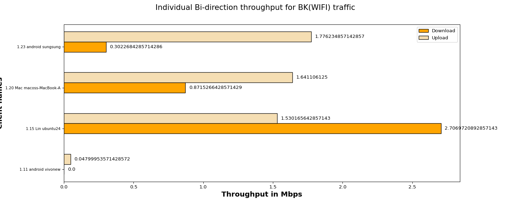
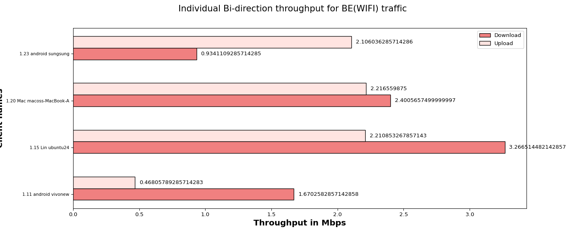
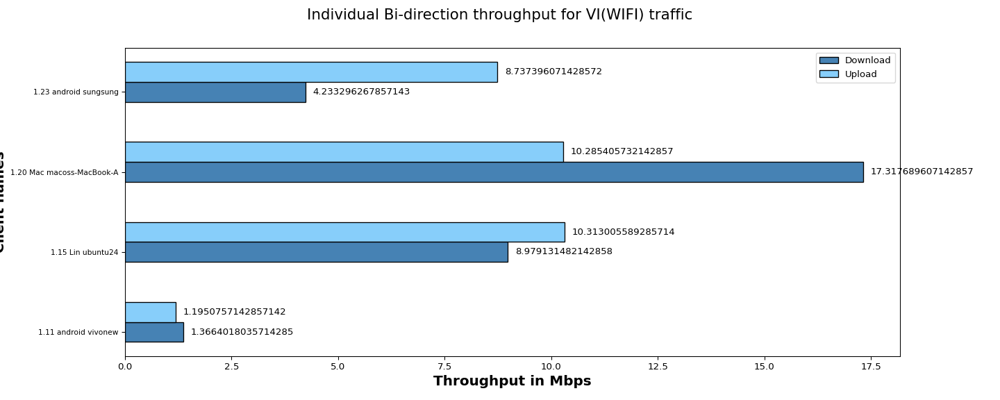
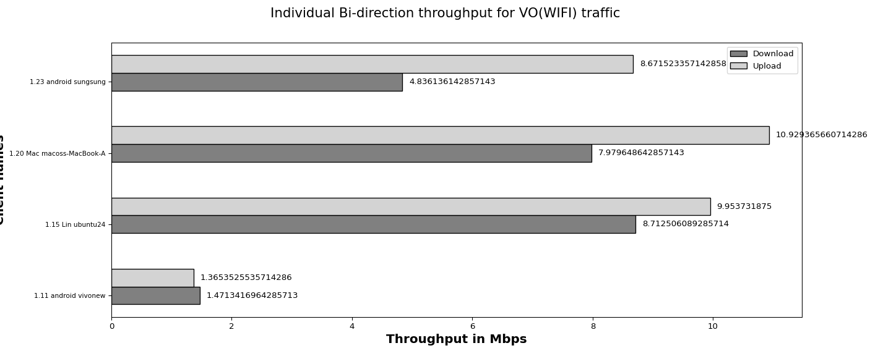

The objective of the QoS (Quality of Service) traffic throughput test is to measure the maximum achievable throughput of a network under specific QoS settings and conditions. By conducting this test, we aim to assess the capacity of network to handle high volumes of traffic while maintaining acceptable performance levels, ensuring that the network meets the required QoS standards and can adequately support the expected user demands.
| Test Configuration |
|
||||||||||||||||||||||||||||||||||||||||
| No of Stations | Throughput for Load 100.0 Mbps-upload | Throughput for Load 100.0 Mbps-download |
|---|---|---|
| 4 | BK : 5.0, BE : 7.0, VI: 30.53, VO: 30.92 | BK : 3.88, BE : 8.27, VI: 31.9, VO: 23.0 |
The below graph represents overall Bi-direction throughput for all connected stations running BK, BE, VO, VI traffic with different intended loadsUpload:100.0 Mbps,Download:100.0 Mbps per tos

The below graph represents individual throughput for 4 clients running BK (WiFi) traffic. X- axis shows “Throughput in Mbps” and Y-axis shows “number of clients”.

| Client Name | MAC | SSID | Type of traffic | Offered upload rate | Offered download rate | Observed average upload rate | Observed average download rate | Observed Upload Drop (%) | Observed Download Drop (%) |
|---|---|---|---|---|---|---|---|---|---|
| 1.11 android vivonew | 92:da:84:1a:a3:75 | <unknown ssid> | Background | 100.0 Mbps | 100.0 Mbps | 0.04799953571428572 Mbps | 0.0 Mbps | 13.281250 | 14.772727 |
| 1.15 Lin ubuntu24 | c:5f:67:a1:39:86 | NETGEAR_5G_wpa2 | Background | 100.0 Mbps | 100.0 Mbps | 1.530165642857143 Mbps | 2.7069720892857143 Mbps | 10.678426 | 12.209023 |
| 1.20 Mac macoss-MacBook-Air.local | 30:35:ad:c5:e1:be | NETGEAR_5G_wpa2 | Background | 100.0 Mbps | 100.0 Mbps | 1.641106125 Mbps | 0.8715266428571429 Mbps | 1.452244 | 31.838134 |
| 1.23 android sungsung | ca:84:bc:fa:cb:7a | NETGEAR_5G_wpa2 | Background | 100.0 Mbps | 100.0 Mbps | 1.776234857142857 Mbps | 0.3022684285714286 Mbps | 25.037416 | 29.101295 |
The below graph represents individual throughput for 4 clients running BE (WiFi) traffic. X- axis shows “number of clients” and Y-axis shows “Throughput in Mbps”.

| Client Name | MAC | SSID | Type of traffic | Offered upload rate | Offered download rate | Observed average upload rate | Observed average download rate | Observed Upload Drop (%) | Observed Download Drop (%) |
|---|---|---|---|---|---|---|---|---|---|
| 1.11 android vivonew | 92:da:84:1a:a3:75 | <unknown ssid> | Besteffort | 100.0 Mbps | 100.0 Mbps | 0.46805789285714283 Mbps | 1.6702582857142858 Mbps | 14.882361 | 18.404615 |
| 1.15 Lin ubuntu24 | c:5f:67:a1:39:86 | NETGEAR_5G_wpa2 | Besteffort | 100.0 Mbps | 100.0 Mbps | 2.210853267857143 Mbps | 3.266514482142857 Mbps | 4.548505 | 4.447476 |
| 1.20 Mac macoss-MacBook-Air.local | 30:35:ad:c5:e1:be | NETGEAR_5G_wpa2 | Besteffort | 100.0 Mbps | 100.0 Mbps | 2.216559875 Mbps | 2.4005657499999997 Mbps | 0.515842 | 6.629554 |
| 1.23 android sungsung | ca:84:bc:fa:cb:7a | NETGEAR_5G_wpa2 | Besteffort | 100.0 Mbps | 100.0 Mbps | 2.106036285714286 Mbps | 0.9341109285714285 Mbps | 9.151343 | 25.678255 |
The below graph represents individual throughput for 4 clients running VI (WiFi) traffic. X- axis shows “number of clients” and Y-axis shows “Throughput in Mbps”.

| Client Name | MAC | SSID | Type of traffic | Offered upload rate | Offered download rate | Observed average upload rate | Observed average download rate | Observed Upload Drop (%) | Observed Download Drop (%) |
|---|---|---|---|---|---|---|---|---|---|
| 1.11 android vivonew | 92:da:84:1a:a3:75 | <unknown ssid> | Video | 100.0 Mbps | 100.0 Mbps | 1.1950757142857142 Mbps | 1.3664018035714285 Mbps | 10.586690 | 14.509029 |
| 1.15 Lin ubuntu24 | c:5f:67:a1:39:86 | NETGEAR_5G_wpa2 | Video | 100.0 Mbps | 100.0 Mbps | 10.313005589285714 Mbps | 8.979131482142858 Mbps | 2.724062 | 2.584402 |
| 1.20 Mac macoss-MacBook-Air.local | 30:35:ad:c5:e1:be | NETGEAR_5G_wpa2 | Video | 100.0 Mbps | 100.0 Mbps | 10.285405732142857 Mbps | 17.317689607142857 Mbps | 0.256741 | 0.568147 |
| 1.23 android sungsung | ca:84:bc:fa:cb:7a | NETGEAR_5G_wpa2 | Video | 100.0 Mbps | 100.0 Mbps | 8.737396071428572 Mbps | 4.233296267857143 Mbps | 1.292450 | 11.860500 |
The below graph represents individual throughput for 4 clients running VO (WiFi) traffic. X- axis shows “number of clients” and Y-axis shows “Throughput in Mbps”.

| Client Name | MAC | SSID | Type of traffic | Offered upload rate | Offered download rate | Observed average upload rate | Observed average download rate | Observed Upload Drop (%) | Observed Download Drop (%) |
|---|---|---|---|---|---|---|---|---|---|
| 1.11 android vivonew | 92:da:84:1a:a3:75 | <unknown ssid> | Voice | 100.0 Mbps | 100.0 Mbps | 1.3653525535714286 Mbps | 1.4713416964285713 Mbps | 7.610046 | 14.497905 |
| 1.15 Lin ubuntu24 | c:5f:67:a1:39:86 | NETGEAR_5G_wpa2 | Voice | 100.0 Mbps | 100.0 Mbps | 9.953731875 Mbps | 8.712506089285714 Mbps | 1.169522 | 1.599313 |
| 1.20 Mac macoss-MacBook-Air.local | 30:35:ad:c5:e1:be | NETGEAR_5G_wpa2 | Voice | 100.0 Mbps | 100.0 Mbps | 10.929365660714286 Mbps | 7.979648642857143 Mbps | 0.175256 | 3.717950 |
| 1.23 android sungsung | ca:84:bc:fa:cb:7a | NETGEAR_5G_wpa2 | Voice | 100.0 Mbps | 100.0 Mbps | 8.671523357142858 Mbps | 4.836136142857143 Mbps | 0.757025 | 6.704907 |
| Information |
|
||||